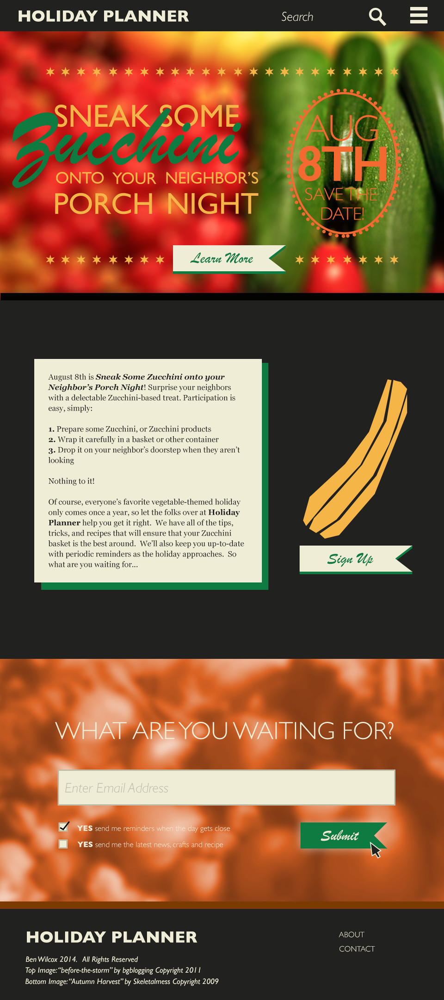

Sneak Some Zucchini Onto Your Neighbor's Porch Night
As an assignment for class, I was tasked with making a web page for an event. The event I chose was the holiday Sneak Some Zucchini Onto Your Neighbor's Porch Night. I went through several steps before reaching the final result.
1) Mood Boards I used mood boards in order to get a feel for what feelings I wanted the page to evoke, as well as get some ideas for colors and font choices. I came up with 3 designs: I used bits and pieces of all of them, but I eventually leaned more heavily on the second. It was a lot more fun than the other ones, and it played up the "night" aspect of the holiday. After this I moved on to the next step.
2) Style Tiles The next step was to create some style tiles to get some basic elements. I came up with 2 designs I didn't end up using this one. I liked the harvest color palette, but Sneak Some Zucchini Onto Your Neighbor's Porch Night is a silly and fun idea, which this design just didn't deliver. This was the style tile I ended up using. It was fun, the "night" element was obvious, and it still retained some of the harvest color palette from the first one.
3) Putting It All Together The page is part of a larger service called Holiday Planner, which alerts users to upcoming holiday and emails them relevent information about it. The assignment specified a width of 1024 pixels, but no height, I decided to present the most important information above the fold: the name of the holiday and the date. If the user didn't know they could scroll down, I added a "learn more" button, which automatically scrolls to the next section. After reading the description, the user can then decide if they want to sign up to receive updates and alerts about the holiday.
 back to projects